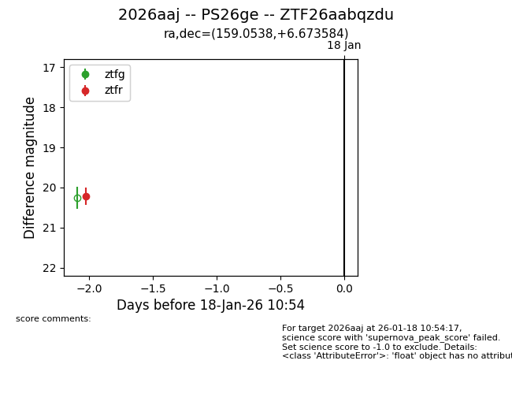
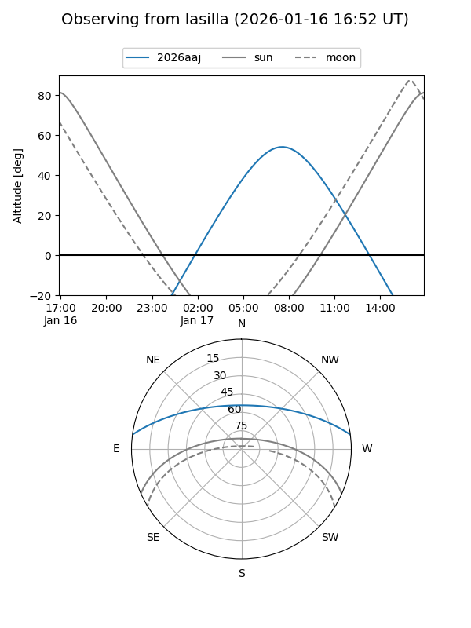
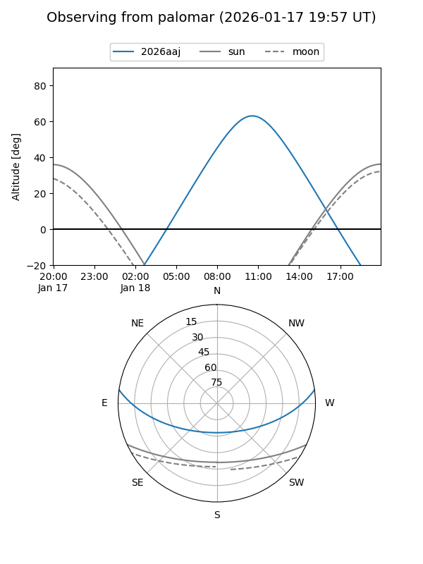

2026aaj
Target 2026aaj at 2026-01-18 10:56
Aliases and brokers:
FINK: link
Lasair: link
ALeRCE: link
TNS: link
YSE: link
alt names
ZTF26aabqzdu (ztf,fink_ztf)
2026aaj (tns,yse)
PS26ge (panstarrs)
Coordinates:
equatorial (ra, dec) = 159.0538,+6.67358
equatorial (HMS+DMS) = 10:36:12.91,+06:40:24.90
galactic (l, b) = (239.2135,+51.95226)
Flags:
Photometry:
last ztfr=20.22
1 ztfr detections
Lightcurve

Visibility


Additional plots